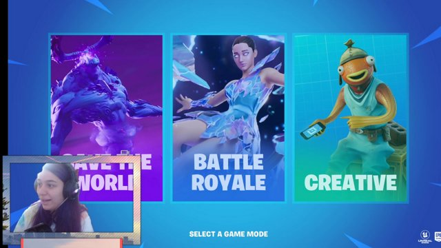
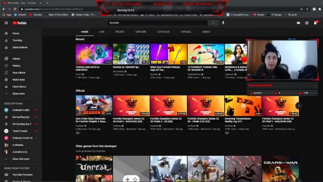
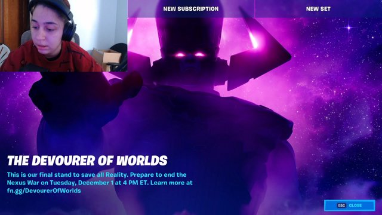
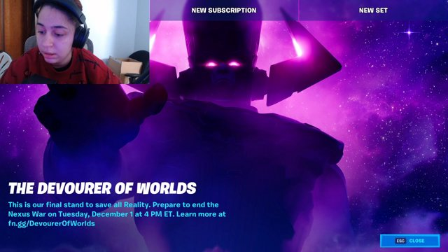
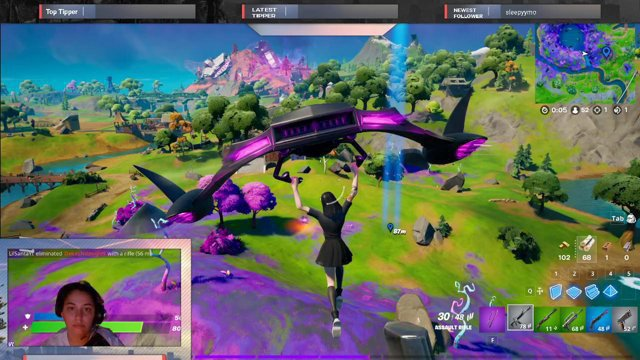
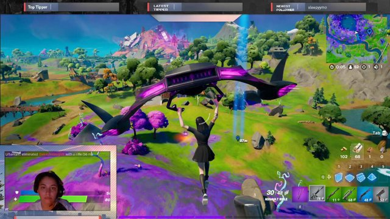

I grew up on a lot of gaming systems. For example, the Nintendo Wii, Nintendo DS, and the Nintendo GameCube was a huge part of my childhood. I've always loved gaming especially playing Mario and Legends of Zelda games. I have always had love for videos games ever since as far back as I can remember. When I started college, I got into PC gaming, which was something I was not used to. The reason I ended up choosing Computer Science as my degree was because of the love of PC gaming I had developed. Originally I applied to National Louis University for Communications because at the time of applying to colleges, I had an interest for Journalism. Then I ended up changing my degree Freshman year to Pyschology, with the intensions of being a social worker because I love to help people out by talking to them. It wasnt until mid Sophomore year of college that I decided to change it to Computer Science. I ended up choosing CS because I realized I wouldnt be mentally happy with what I persued in Psychology. I also realized I had a desire for working in the technology field and was inspired by others around me seeing how amazing the Computer Science world is. I am huge on PC gaming. I have been gaming on PC for almost 3 years now. I started streaming in August of 2020 because I got inspired by other big streamers to try it out and to get out of my comfort zone. Even though I cant stream on a daily basis, I try to build content where I am available to do so. Ever since the pandemic started, I have gone back to being an introvert and it got really bad to where I would have nervous wrecks, break down, and not feel comfortable interacting with others. Being remote also limited my physical interactions with people and I wanted to find a way back to that.


 

 

These are a few highlights from some of my streams within the last year